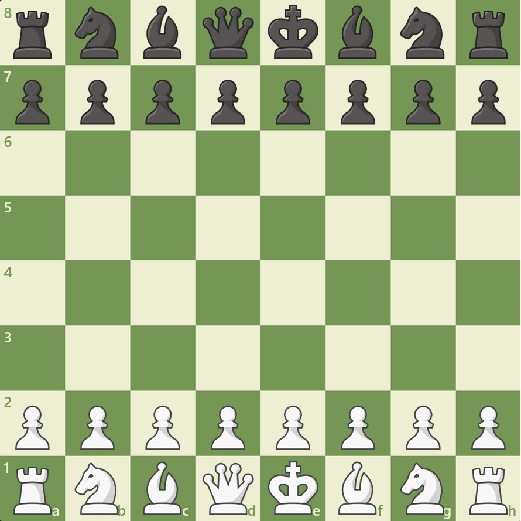
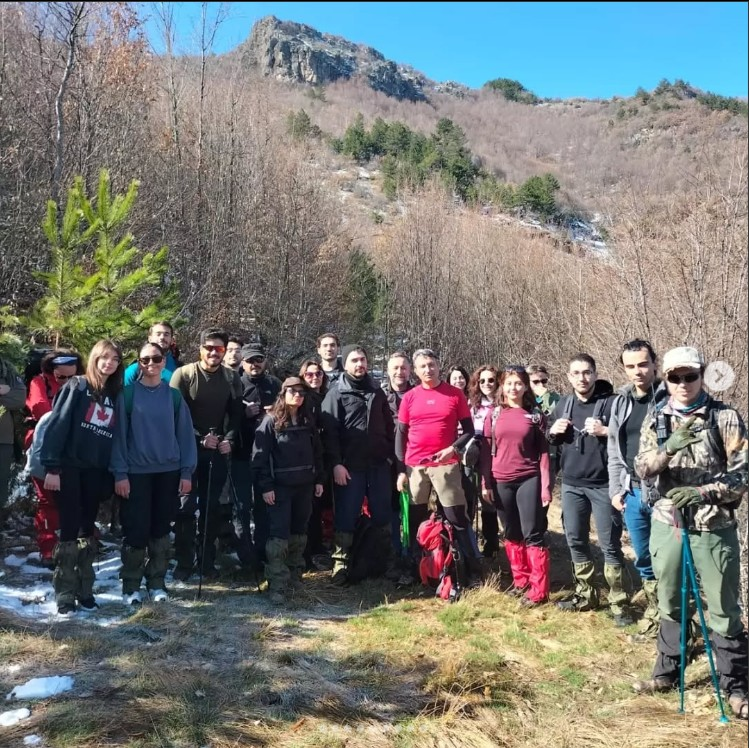
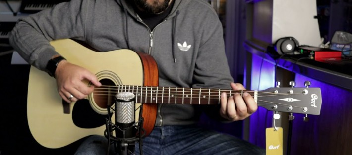

My Hobbies
Outside of my academic and professional interests, here are three activities I genuinely enjoy.

Playing Chess
I love strategic thinking and planning ahead — chess is one of the activities that keeps my mind sharp and focused.

Hiking & Nature Walks
Exploring trails, taking deep breaths of fresh air and seeing landscapes — nature walks are where I recharge and reflect.

Playing Guitar
Stringing melodies and learning new chords has been a relaxing and creative outlet for me — music brings balance.